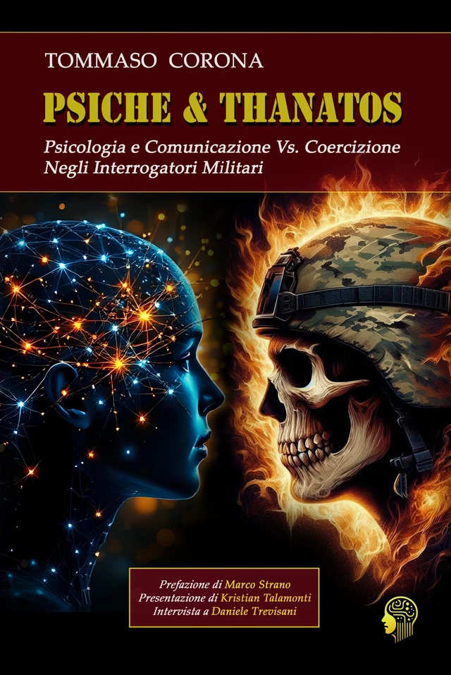

SAGGIO / 01
Psiche & Thanatos
Psicologia e Comunicazione Vs. Coercizione negli Interrogatori Militari
La scheda su AmazonUNIVERSO PSICHE & THANATOS
Comunicazione, influenza, identità e pensiero critico. Quattro prospettive sui meccanismi della mente e sul rapporto con l’altro.

ANTEPRIMA DEL LIBRO · 36 PAGINE
Psicologia e comunicazione vs. coercizione negli interrogatori militari
SAGGIO / 01
Psicologia e Comunicazione Vs. Coercizione negli Interrogatori Militari
La scheda su AmazonSAGGIO / 02
Otto Strategie di Controllo Psicologico nei Regimi Totalitari e nelle Sette
La scheda su AmazonSAGGIO / 03
Cultura, Globalizzazione e Identità Riflessa
La scheda su AmazonSAGGIO / 04
La polarizzazione ci sta disumanizzando
La scheda su AmazonI collegamenti portano alle schede Amazon e si aprono in una nuova scheda.